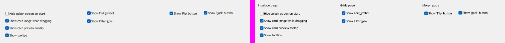
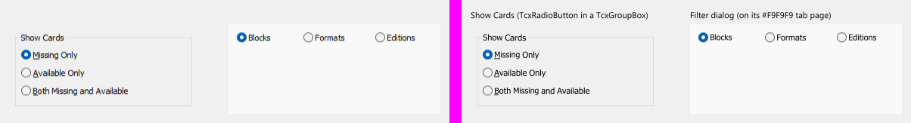
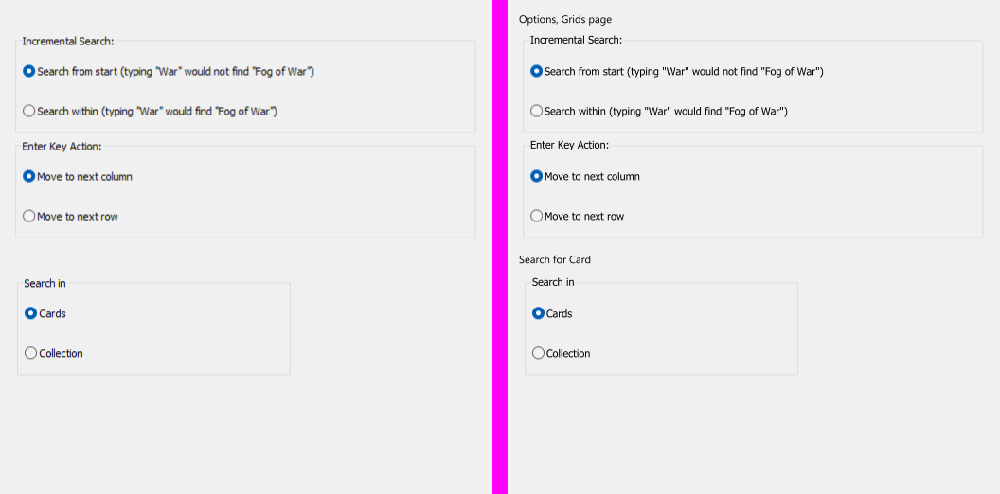
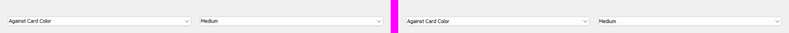
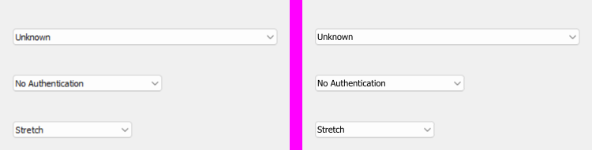
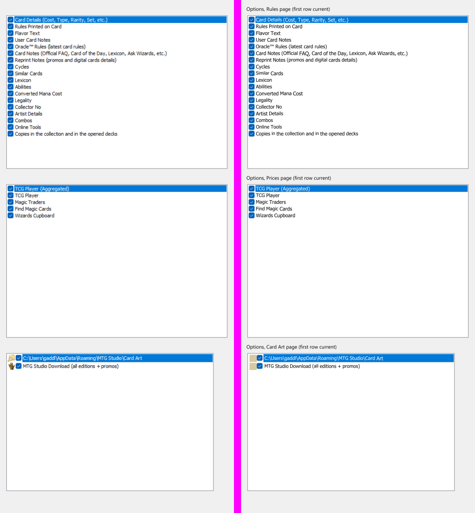
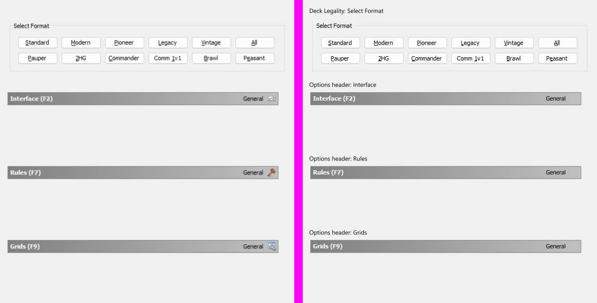
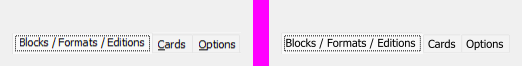
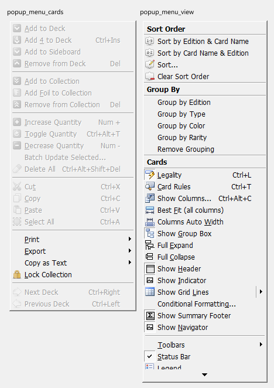
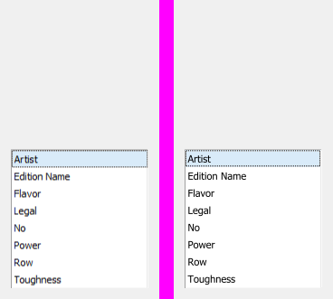

Neper looks progress
One widget set, several platform looks (docs/ui/looks-plan.md). Generated from docs/ui/looks/status.json by scripts/render_looks.py; updated 2026-10-15. 30 controls.
Neper
profile Neper
planned 0started 0review 0ready 30
Windows
profile Windows
planned 0started 1review 29ready 0
Windows dark
profile Windows
planned 29started 1review 0ready 0
macOS / iOS
profile CupertinoLike
planned 30started 0review 0ready 0
Android
profile MaterialLike
planned 30started 0review 0ready 0
| Control | Neper | Windows | Windows dark | macOS / iOS | Android |
|---|---|---|---|---|---|
| LabelTcxLabel → control.text | ready The baseline: control.text in the Neper type scale, same strings as the Windows sheet (the sheet's cells changed to the real v3 labels; the Neper pixels of the old sheet are unchanged). | review control.windows_label: every TcxLabel of the live dialog captures is Tahoma (DFM Style.Font.Height -11 regular, -13 and -21 bold), so the label takes the DFM size, weight and colour, sits 1 px in from its box, underlines the & mnemonic at the baseline and the hot-link run (#336CCC, fsUnderline) across the text. Ten real labels (Row Color, Card:, Deck Properties title and path, the grey Last update line, About's 21 px product name, version, Send email and URL links, the wrapped Missing Set Cards line) are compared with docs/ui/looks/ref/windows/label.png (windows/label-vs-ref.png): ink boxes agree within 1 px on 6 of 10; colours are the DFM colours (#33486C bold titles, #336CCC links, clGray #808080), not sampled from the ClearType text. Tahoma Bold is registered as font 10 in e.ui.looks and TextOptions.face makes a family lead the font chain. 7 known gaps
| planned | planned | planned |
| ButtonTcxButton → control.button | ready The baseline: the existing v2 pill button. The sheet now has ten cells (the Windows evidence sizes); the Neper pixels of the earlier sheets (button.png, button_kinds.png) render identically to master. | review Redrawn from the live 96 DPI captures (docs/ui/looks/ref/windows/dialogs; 96 TcxButtons in 20 dialogs). The crisp rings of Search for Card, Sort, Missing Set Cards, Filter and Conditional Formatting are one shape for every size: a visible box of (W-2) x (H-1) at (1, 1) of the DFM rect (73 x 22 for 75 x 23, 83 x 24 for 85 x 25, 123 x 24 for 125 x 25), a soft two-row top and bottom, one-pixel sides and 6 x 6 corners. e.ui.winbutton paints them from the captured pixels: rest, default (accent #0078D4 sides) and disabled. Compared with docs/ui/looks/ref/windows/button.png and button_kinds.png the ring, face and corners are exactly equal (max per-channel error 0) on the rest, default, disabled, 85 x 25 default, 85 x 25 rest, 125 x 25 rest and disabled, and 30 x 25 disabled cells. The caption is Tahoma 8 pt (11 px; the ink matched Tahoma, not Segoe UI, whose width only coincided on Cancel), centred 1 px left of and above the box centre, ink boxes within 1 px of the captures; & mnemonics are underlined at the baseline; the focus rectangle is the control rect less 3 on every side. Button kinds (picture + caption, picture alone, split, toggle, busy, plain) are in windows/button_kinds.png. 9 known gaps
| started Windows 11 dark palette (face #2B2B2B, border #5A5A5A, accent #4CC2FF, white text) rendered for the button only; every colour is unmeasured (no v3 capture in dark). 2 known gaps
| planned | planned |
| Check boxTcxCheckBox → control.checkbox | ready The baseline: the v2 18 px box in its 40 px state circle, all states. | review  Checked against crops of the live 100 % captures of the Options Interface, Grids and Morph pages (sheet checkbox_dialog, reference docs/ui/looks/ref/windows/checkbox_dialog.png; the state matrix is sheet checkbox). Matches: 13 x 13 box at +2 from the control, rows 21 tall and 17 tall (Style.TransparentBorder = False, flush at the left), box 0.3 below the row's centre, #005FB8 fill, #F3F3F3 face and #787878 edge, caption in Tahoma 11 px with ink starting 16 px after the box, text rows on the capture's rows. Over the eight boxes the mean per-channel error in the box area is 5.7 and the largest 97 (edge pixels). Caption font is Tahoma 8 pt (11 px) as in the DFMs (Font.Name = Tahoma); drawn at 10.9 px because our unhinted advances run 1 to 2 percent wider than GDI's hinted ones (ink widths then agree within 0 to 3 px over 30 character strings); the capture is ClearType (coloured fringes), ours grayscale. 9 known gaps
| planned | planned | planned |
| Radio buttonTcxRadioButton → control.radio | ready The baseline: the v2 20 px ring in its 40 px state circle, all states. | review  Checked against crops of the live 100 % Missing Set Cards dialog (three TcxRadioButton, 17 tall, in a TcxGroupBox) and the Filter dialog (Blocks selected, Formats, Editions on its #F9F9F9 tab page); sheet radio_dialog, reference docs/ui/looks/ref/windows/radio_dialog.png (state matrix: sheet radio). Matches: disc 13 across flush at the control's left, centre 0.35 below the row's, #005FB8 disc with a white dot about 5 across, unselected ring #6E6E6E on a #F3F3F3 face, caption ink 16 px after the disc, the 24 unit pitch of the rows, the group frame (see group_box). Mean per-channel error in a disc area 7.6 to 9.4, largest 128 (selected, edge pixels). Caption font is Tahoma 8 pt (11 px) as in the DFMs (Font.Name = Tahoma); drawn at 10.9 px because our unhinted advances run 1 to 2 percent wider than GDI's hinted ones (ink widths then agree within 0 to 3 px over 30 character strings); the capture is ClearType (coloured fringes), ours grayscale. 6 known gaps
| planned | planned | planned |
| Radio groupTcxRadioGroup → control.radio_group | ready The baseline: v2 radios stacked with no frame. | review  Checked against crops of the live 100 % Options Grids page (two TcxRadioGroup, 486 x 105, long captions) and the Search for Card dialog (289 x 105); sheet radio_group_dialog, reference docs/ui/looks/ref/windows/radio_group_dialog.png (generic sheet: radio_group). Matches: the frame's left, top and bottom lines (error at most 4 per channel), caption 8 in with the frame cut by its text (trailing space included), radios 8 in and 18 down at a 42 unit pitch with the mark flush and centred in the row, Tahoma captions. Added control.windows_radio_group_sized (fixed width and height). Caption font is Tahoma 8 pt (11 px) as in the DFMs (Font.Name = Tahoma); drawn at 10.9 px because our unhinted advances run 1 to 2 percent wider than GDI's hinted ones (ink widths then agree within 0 to 3 px over 30 character strings); the capture is ClearType (coloured fringes), ours grayscale. 6 known gaps
| planned | planned | planned |
| Text editTcxTextEdit → control.text_field | ready The baseline: the existing v2 outlined field, unchanged. | review Same native edit frame as the matched mask edit (Options Passwords, 495 x 21 at 100 %: #EDEDED border, #F7F7F7 / #FBFBFB / #FEFEFE inner lines, #B8B8B8 / #C1C1C1 two-row foot, Tahoma 10.8 px text at (3, 3)). No v3 dialog shows a TcxTextEdit with text at 100 %, so the text rows are checked through the button edit, whose text is the same inner edit. Real-dialog sheet: windows/edits_dialog.png against ref/windows/edits_dialog.png. 10 known gaps
| planned | planned | planned |
| Spin editTcxSpinEdit → control.spin_box | ready The baseline: the existing v2 outlined field, unchanged. | review Matches both Options captures at 100 %: the 121 x 21 Decks spin with fast buttons (left, up/down pair, right) and the 67 x 21 Morph spins (up/down pair). Sheet edits_dialog (reference ref/windows/edits_dialog.png, diff windows/edits_dialog-diff.png): frame exact apart from the corner pixels; arrow glyphs are within a pixel but a few pixels differ by up to 136 levels (triangle antialiasing). Statistics Hand Size spin at 150 % has the same two-arrow shape. Real-dialog sheet: windows/edits_dialog.png against ref/windows/edits_dialog.png. 13 known gaps
| planned | planned | planned |
| Combo boxTcxComboBox → control.combo_box | ready The baseline: the v2 outlined combo box in the same cells. Open lists are on neper/combo_box_lists.png (run the app with an argument, `combo_box.exe lists`); the list opens fading, so one frame shows it part way. | review  Round 3, from the live 100 % dialog captures (ref/windows/dialogs; scripts/looks_refs_d.py makes the crops and the pixel diff). The frame is now the theme bitmap v3 shows: a rounded #FDFDFD box with a two-ring edge (pixel tables for the four corners, #DCDCDC / #EDEDED top, #D3D3D3 / #DCDCDC foot, #D7D7D7 and #DFDFDF sides) that bleeds 1 px right and down, the 17 px drop-button column with the measured chevron (pixel table, 3 levels at most), and Tahoma 11 px text (ink 89 px wide for 'Against Card Color', as in the capture; the DFMs ask for Tahoma -11). Matched sheets, each beside its crop: combo_box_dialog (Options > Grids, two combos at rest: frame, chevron and text origin equal to 0 levels on the first, 3 to 5 on the second; the other instances of the real control vary by up to 10), combo_box_edit (Search for Card: an editable combo with the focus is the square white frame with the accent underline #5599D5 / #0067C0 / #A0C3E0 and a pale ring: equal except the caret our editor shows), combo_box_pick (Conditional Formatting: a focused list-style combo keeps the rounded frame and shows v3's dotted focus rectangle, 121 x 16 at (3, 3): dots within 5 levels, frame within 10 to 23 levels on the right edge). Round 2 pieces unchanged: the toolbar combo (combo_box_flat) and the drop-down list (combo_box_lists, now with Tahoma rows). 8 known gaps
| planned | planned | planned |
| Image combo boxTcxImageComboBox → control.image_select | ready The baseline: control.select (no pictures: control.image_select falls back to it under the other looks). | review  The same Windows 11 combo frame, chevron and Tahoma 11 text as the combo box (control.image_select_wide takes the head's width: v3's DFM widths 335, 189 and 151). image_combo_box_dialog reproduces the three captured instances (Options > Defaults 'Unknown', Internet Authentication 'No Authentication', Morph 'Stretch') beside their crops: frame within 2 levels on the first, 5 and 10 on the others (instance variation), chevron within 3, text ink boxes within 1 px, button column equal. None of the captures shows a picture in the head or the list, so the picture variants of the state sheet stay as before. 6 known gaps
| planned | planned | planned |
| Date editTcxDateEdit → control.picker | ready The baseline: overlay.date_picker_with with a typed field (stray carets are the harness's focus slot, as in the other sheets). | review Unchanged by round 3: v3's TcxDateEdit (deck registration sheets, DFM: ebsFlat, ShowTime False) is in no capture, so the closed edit keeps the combo-box frame and the drop-down calendar stays the Neper calendar in Windows colours. The calendar drop-down is not captured by any dialog, open or closed. 7 known gaps
| planned | planned | planned |
| Mask editTcxMaskEdit → control.formatted_field | ready The baseline: the existing v2 outlined field, unchanged. | review The empty password mask edit matches the three Options Passwords instances at 100 % (frame max error 36 levels at the end pixels, mean 0.36 over the cell). Typing, selection, masks and echo are not captured. Real-dialog sheet: windows/edits_dialog.png against ref/windows/edits_dialog.png. 12 known gaps
| planned | planned | planned |
| MemoTcxMemo → control.text_area | ready The baseline: the existing v2 outlined field, unchanged. | review Same frame as the matched edits (checked against the Report Title memo at 150 %: #EEEEEE border, soft inner line, #929292 / #C3C3C3 foot). Tahoma 10.8 px with 13 px lines (DFM: memo font Tahoma -11). Real-dialog sheet: windows/edits_dialog.png against ref/windows/edits_dialog.png. 12 known gaps
| planned | planned | planned |
| Button editTcxButtonEdit → control.button_edit | ready The baseline: the existing v2 outlined field, unchanged. | review Matches the Options Decks (495 x 21) and Card Art (464 x 21) button edits at 100 %: 16 x 17 ellipsis button at 1 px from the end and 2 from the top (#FDFDFD face, #E5E5E5 sides, lighter top, #D4D4D4 bottom, #E3E3E3 shadow row, three 2 px dots #AEAEAE / #CCCCCC); frame and button max error 79 levels (rounded corner pixels), text ink within 1 px. Real-dialog sheet: windows/edits_dialog.png against ref/windows/edits_dialog.png. 12 known gaps
| planned | planned | planned |
| Token editTdxTokenEdit → control.token_field | ready The baseline: the existing v2 outlined field, unchanged. | started Edit frame holding rounded tokens with a cross and a wrapping input, Tahoma text; no v3 capture of a token edit exists (TdxTokenEdit sits on the Filter dialog's Cards tab, which no capture shows open). 12 known gaps
| planned | planned | planned |
| Check list boxTcxCheckListBox → control.multi_select_list | ready The baseline: the v2 multi-select list (selection fill, 40 px rows, state circles). | review  v3 does have a TcxCheckListBox: the Options Rules, Prices and Card Art pages (the earlier note saying it was absent was wrong). Checked against the live 100 % Rules page (495 x 343, eighteen checked rows, first row current); sheet check_list_box_dialog, reference docs/ui/looks/ref/windows/check_list_box_dialog.png (state matrix: sheet check_list_box). Matches: the 2 unit edge with its four measured colours per ring, white viewport, 15 unit rows, the check mark 1.15 in and 1.4 down in each row, caption ink 18 in, the #0078D7 highlight from 16.16 behind the caption only with white text, Tahoma 11 px. Caption font is Tahoma 8 pt (11 px) as in the DFMs (Font.Name = Tahoma); drawn at 10.9 px because our unhinted advances run 1 to 2 percent wider than GDI's hinted ones (ink widths then agree within 0 to 3 px over 30 character strings); the capture is ClearType (coloured fringes), ours grayscale. 7 known gaps
| planned | planned | planned |
| Progress barTcxProgressBar → control.progress_bar | ready The baseline: the v2 pill bar (4 tall, stop dot), determinate and indeterminate. | review v3's TcxProgressBar with NativeStyle: 21 tall (DFM default height), 1 px frame, flat square green fill inside it, percent centred (ShowTextStyle cxtsText: black on the track, white over the fill), marquee as one travelling segment. Read from import.vcl.form.dfm; no capture of a v3 progress bar exists. ROUND 3: the capture has the main window's TcxProgressBar (148 x 14 at x 293 in the status bar) but it is hidden while idle, and no dialog or report shows one: still no v3 pixels for a progress bar. 6 known gaps
| planned | planned | planned |
| Group boxTcxGroupBox → control.group_box | ready The baseline: the v2 outlined group (rows with dividers); the section header cell shows a plain title. | review  Checked against the live 100 % Deck Legality 'Select Format' TcxGroupBox (513 x 93; its twelve buttons are blanked in the reference, they belong to the button sheet), the 'Show Cards' group of Missing Set Cards (sheet radio_dialog) and the header bars of the Interface, Rules and Grids Options pages (sheet group_box_dialog, reference docs/ui/looks/ref/windows/group_box_dialog.png). Frame lines match exactly (0 levels on the top, bottom and left lines, 8 on one right edge): 1 unit #DCDCDC, top line 6.35 below the group's top, caption 8 in and 2 above the line, the gap cut to the text width. The header bar is v3's TGradient (gradient.pas), not a group box: 505 x 24, #808080 to #C0C0C0 with a GDI+ 1 px #808080 border at the measured sub-pixel offset; title Tahoma Bold white at (4.8, 3.75), 'General' Tahoma right aligned. Header mean error 2.2 to 4.6 (text), largest 150. Tahoma Bold (id 10) added to the harness fonts (looks.e). Caption font is Tahoma 8 pt (11 px) as in the DFMs (Font.Name = Tahoma); drawn at 10.9 px because our unhinted advances run 1 to 2 percent wider than GDI's hinted ones (ink widths then agree within 0 to 3 px over 30 character strings); the capture is ClearType (coloured fringes), ours grayscale. 7 known gaps
| planned | planned | planned |
| Page control (tabs)TcxPageControl → control.tabs | ready The baseline: v2 tabs (primary indicator) and the tab view. | review  Round 3: v3 has two page control looks, both captured at 100 %. (1) lfUltraFlat, NativeStyle False (Statistics, About; TabsOptions default): redrawn to the capture's geometry: strip starting 5 px before the first tab, the chosen tab a #F0F0F0 box framed by two grey rows (#555555, #A0A0A0) on top and 1 px black sides, the strip's two-row bottom line, 14 tall #A0A0A0 hairlines, a 16 px picture and 6 px gap before the caption, Tahoma 11, the dotted focus rectangle; page_control_about and page_control_stats equal their crops in lines (within 2 levels) apart from the picture bitmaps, text ink boxes within 1 px. (2) lfOffice11 with NativeStyle True (Filter, Customization; new TabsOptions.native): the Windows 11 tab face, unselected tabs 20 tall (#E9E9E9 top, #EEEEEE, #F3F3F3 face, #EAEAEA / #F2F2F2 foot), the chosen tab 22 tall on #F9F9F9 with the page's top edge (#E9E9E9, #F2F2F2) under the others, #E5E5E5 left edges, dotted focus rectangle in the chosen tab: page_control_filter and page_control_custom, text boxes within 1 px, tab edges within 2 px. The tpBottom strip (round 2) is unchanged. 8 known gaps
| planned | planned | planned |
| SplitterTcxSplitter → control.split_view | ready The baseline: the v2 sash (1 px line, grip on hover, primary line while dragged). | review The hot zone of v3's TcxSplitter (simple style), redrawn from the Filter window capture at 100 % (splitter_dialog, beside its crop; the strip columns match to 9 levels, the dots' pale ghost included): an 8 wide strip of the dialog face, the zone with a #A0A0A0 frame, #BBBBBB top and foot rows, a #DFDFDF row and a white column inside, a #D5D5D5 shadow row under it, a 4 x 8 '<' chevron 6 px from each end (grey 0 / 80 / 160) and #50A0DF / #A0C8E8 dots every 3 px. Its length is floor(0.3 x strip + 2), centred: 387 gives 118, 463 gives 140 and 497 gives 151, which are the three captured lengths (it resolves the earlier gap about the lengths read off the main window). The live sheet now uses the real strip lengths. 5 known gaps
| planned | planned | planned |
| Status barTdxStatusBar → navigation.status_bar | ready The baseline: v2 status bar. | review Measured at 100 % from the live main window (ref/windows/status_bar.png = x 8..791, y 574..592; windows/status_bar-vs-ref.png). Bar 19 tall: #D4D4D4 line above, #FFFFFF below, panels 17 tall between (rows 1..17: #BBBBBB top line, #F5F5F5 bottom line), panels one px apart: 282 | 153 | the rest (item.panel_width, item.fills); each has a dark left line (#A0A0A0, #ADADAD, #B5B5B5: a gradient along x, 160 + 0.047 x) with a #E3E3E3 line beside it on all but the first, and a #FCFCFC + #F3F3F3 pair at its right; every seam column matches the capture. Text Tahoma 10.8 px (ink 262 px for the counts string: 9..270), first panel centred (the DFM: taCenter), the others start 3 px in ('Idle' ink at x 439). Size grip: 3 diagonal strokes (lead #F3F3F3, then #E9E9E9 #BDBDBD #AEAEAE #DADADA repeating) over 12 rows and 13 columns, drawn pixel for pixel from the capture (identical). Round 3: main-window-deck-mode, main-window-end and the '*-main' captures show a status bar pixel-identical to main-window (same texts, Idle); controls.json lists the progress container (TdxStatusBarContainerControl 148 x 14 at x 293, y 576 in the window) with its TcxProgressBar hidden in every capture, so the progress state is still a guess. 6 known gaps
| planned | planned | planned |
| Toolbar buttonTdxBarButton → control.glyph_button | ready The baseline: round glyph buttons (control.glyph_toggle); the sheet's first cell is one row of them. | review Measured at 100 % from the live main window (ref/windows/toolbar_button.png = the left two bars of the second toolbar row, x 8..454, y 84..109; windows/toolbar_button-vs-ref.png). Strip 26 tall: #F5F5F5 line above, #BEBEBE and #D2D2D2 lines below, a #FFFFFF left line (#F3F3F3 on the next bar), a closed bar ends in a #AAAAAA line; grip = two lines of (white, face, #A0A0A0) 3 px each at x 4 and 7 (#F2F2F2/#ABABAB beside another bar), rows 1..23, end rows #BDBDBD/#D2D2D2. Buttons 23 wide (16 px picture, 3.5 each side) from x 11, separators 6 wide (#A3A3A3 + #FCFCFC lines at +2/+3, 21 tall). Bar A = 2+2+1+3 buttons in 215 px, bar B = 4+2+3 in 232 px: every line, separator and grip pixel column matches the capture. Disabled picture drawn as a #C8C8C8 glyph (v3: pale bitmap, mean #D4D4D4). Round 3: main-window-deck-mode and main-window-end show the enabled rest state: the strip, grips, separators and button boxes are identical to the disabled capture, only pixels inside the 16 px picture boxes at x 14..29, 37..53, 90..104, 118..134, 147..163, 173..184 and 193..209 (bar-relative, coloured v3 bitmaps: new, open, save all, close, properties, legality bolt, statistics) differ. No capture shows a hot, pressed or checked button, so those stay guesses. 9 known gaps
| planned | planned | planned |
| Menu barTdxBarManager (main menu) → navigation.menu_bar | ready The baseline: v2 menu bar (the open-menu sheet shows no menu because the menu fades in). | review Measured at 100 % from the live main window (ref/windows/menu_bar.png = x 8..789, y 31..56; windows/menu_bar-vs-ref.png). Strip 26 tall: #FFFFFF dock line, #F5F5F5 line, #F0F0F0 face, #BCBCBC and #DEDEDE lines below that start right of the grip (the grip runs through them, as v3 draws it), grip lines at x 4 and 7. Titles Tahoma 12 px (the DFM's -12), ink 3 rows below the dock: cap rows 8..16, underline rows 18 (full) and 19 (35 %), black on the face; padding 6.25 each side (fitted: the ten title starts are within 2 px of the capture: 17 46 87 136 175 203 232 278 332 373 419 against ours 17 48 90 138 176 204 232 278 331 372 418). Mnemonics as v3: F C S V, Card A(rt), O R T, A d(min), H; written `&File` ... `A&dmin` in the label (the Windows branch strips the `&`, a title with no `&` underlines its first letter). Round 3: the live captures main-window-deck-mode, main-window-end and the four '*-main' captures (taken after menu clicks) were compared pixel by pixel with main-window@1x: the bar rows are identical in all of them (no hot, pressed or open title is ever visible: the menu windows are separate and carry no bar), so the title states stay unverified. The open-menu sheet (menu_bar-open.png) now shows the redrawn popup. The 12 px bar font change was re-checked against the ten popup captures (rows, ink rows and underline row equal). 7 known gaps
| planned | planned | planned |
| Popup menuTdxBarPopupMenu → overlay.menu | ready The baseline: v2 menu (navigation.bar_menu); the menu fades in so the static sheet shows little. | review  Redrawn from the ten live v3 captures (ref/windows/dialogs/menu-File..menu-Help at 100 %, copied as ref/windows/popup_menu_<name>.png; sheets popup_menu_<name>.png with popup_menu_<name>-vs-ref.png, popup_menu_dialog = Cards + View side by side). Geometry, measured: frame 3 px (outer #F0F0F0 / #696969, inner #FFFFFF / #A0A0A0) on #F0F0F0; rows 20 px from x 3; picture slot 20 x 20 (label origin 26); a checked slot is sunken (#A0A0A0 top and left, #FFFFFF bottom and right, white dither on every other pixel where x + y is odd) and v3's 7 x 7 check mark is drawn pixel for pixel: all 400 pixels of the slot equal the capture (View Status Bar, File Collection from Card Pool). Separator 10 px (#A0A0A0 + #FFFFFF lines 2 in from the sides), group header = bold Tahoma 12 on a two-line full-width rule above and below (File Mode, View Sort Order, Search Go to...), submenu arrow 4 x 7 pixel triangle 6 from the right, drop-down row (View Show Grid Lines) = #A0A0A0/#FFFFFF line 17 in from the right + the triangle, bottom scroll arrow 9-wide pixel triangle (View: items clipped at y 594, arrow rows 602..606: equal to the capture). Disabled text #A0A0A0 with a white copy 1 px right and below (label and shortcut). Mnemonics underlined always. Text Tahoma 12 px, word gap +2 px (GDI's hinted spaces), shortcut right-aligned ending 29 px from the right edge, label-only rows 27 px. Against the captures: all ten menu heights are exact, the frame, separators, header rules and scroll clip are pixel-exact (about 98 % of the capture's long #A0A0A0/#FFFFFF line pixels match, the rest are mnemonic underlines on other letters), text rows sit on the same pixel rows (ink bottoms equal, underline row equal); widths differ by -1..+3 px (file 0, cards 0, search -1, view +2, cardart +2, online +3, reports -1, tools +2, admin -1, help 0) and label ink ends by up to 3 px because v3 text is hinted integer-advance ClearType and ours is unhinted grey. Built into navigation.bar_menu (BarCommand gained header and split; bar_menu_limited clips a tall menu); the Windows branch is no longer limited to 14 commands. 11 known gaps
| planned | planned | planned |
| Hint (tooltip)TcxHintStyleController → overlay.tooltip | ready The baseline: the dark plain tooltip and the raised rich tooltip. | review v3's TcxHintStyle window: square, white face, 1 px #767676 frame, black Segoe UI 11.2 px text with 4 x 2 px padding, shown below its anchor with no fade or scale; lines break only where the text does. Colours and padding read off the grid header hint capture docs/grid-parity/T1-header-hint-v5.png (the v5 grid, recorded as matching v3 in D2430); v3 sets Tahoma 8 pt for the hint (hscMain.HintStyle.Font). Round 3: none of the live dialog and window captures shows a hint window (their README lists the menus, dialogs and reports reached; hints appear only after hovering), so the look is unchanged. 8 known gaps
| planned | planned | planned |
| Scroll barTcxScrollBar → widget.scrollbar | ready The baseline: the v2 overlay thumb (4 wide, 8 when the pointer is in the trailing 12) via control.scroll_area. | review The grid's v3 bars as a control (control.scroll_area), re-measured on the live 100 % capture (windows/scroll_bar_live.png beside ref/windows/scroll_bar_live*.png): vertical bar 16 wide #F0F0F0 track, 16 empty arrow slots, a 2 wide #858585 thumb with square ends; horizontal bar (in a grid's navigator row) a 9 thick #858585 block with square ends. Hover widening, pressed colour and arrows are still guesses (the capture is at rest). ROUND 3: re-measured on the Filter list and the FastReport preview: 16 px #F0F0F0 track, 2 px #858585 thumb starting at y 17 (one px lower than before; windows_scroll_bar now uses 17), no arrows drawn; used by the tree table and the Windows scroll_area. 9 known gaps
| planned | planned | planned |
| List boxTcxListBox → control.list_box | ready The baseline: the v2 list box (rounded frame, check on the chosen row). | review  v3 has no list box of its own, but the Customization window (View > Show Columns, TcxGridTableColumnsListBox) shows one at 100 %, and the control is now that: white rows 19 tall, text 4 in (Tahoma 11), a #C1C1C1 line above, #A1A1A1 on the left, #EAEAEA on the right and #F8F8F8 below, the chosen row #D9EBF9 and a dotted focus rectangle round the focused row. list_box_dialog (the eight-row Columns list, first row chosen and focused) matches its crop in frame lines and fill exactly (0 levels), row pitch and the text boxes within 1 px; the dotted rectangle follows the capture's two-row pattern (the capture draws it with colour fringes, so the dots differ by up to 60 levels). The older rounded #FDFDFD frame and #0078D7 selection belonged to the combo's drop-down and are gone from the list box. 5 known gaps
| planned | planned | planned |
| Tree listTcxTreeList → tree_adapter | ready The baseline: collection.tree_table, the existing v2 tree table, same two sheets. | review Measured from the LIVE Filter dialog list (ref/windows/tree_list.png = crop (21,88) 305x319 of dialogs/search-filter-top@1x.png) and the Conditional Formatting Rules list (tree_list_rules.png, windows/tree_list_rules.png). Rows 17 px, stripe phase first row grey (#EFEFEF on even rows); the focused row #ECE9D8 (inactive selection); header 19 px white with #E5E5E5 column lines and Tahoma 11; the 9 x 10 expander box (#919191 frame, light gradient, navy cross) and the 13 x 13 node check box drawn pixel for pixel (new gl shapes TreePlus/TreeMinus/TreeBox); the empty part is white; v3's 16 px bar (#F0F0F0 track, 2 px #858585 thumb) stands beside the table only when rows overflow (thumb 17..227 vs capture 17..228). Row positions, stripes, header, expander and check box match the capture to the pixel; node ink colours are named colours matched by eye. 7 known gaps
| planned | planned | planned |
| Vertical grid (property grid)TcxVerticalGrid → collection.property_grid | ready The baseline: collection.property_grid_of, the existing v2 property grid with group headings, same two sheets. | review Redrawn from the LIVE 100 % Deck Properties capture (ref/windows/vertical_grid.png = crop (16,79) 330x425 of dialogs/deck-properties@1x.png; windows/vertical_grid-vs-ref.png). New painted frame e.ui.vgridlook: 1 px frame (top #AAADB3, left #828790, right #9DA1A8, bottom #D2D4D7), #F0F0F0 gutter 14 px with a #A1A1A5 line, WHITE header cells (the earlier #F0F0F0 guess was wrong), 150 px header + #ABABAE/#F4F4F5 line, 19 px rows (17 + dark/light hairlines), focused row #0078D7 with white name and a dotted rectangle round its value cell, category bands 22 px with the #D2D2D2 to #B7B7B7 gradient, top/bottom lines and the double chevron (pixel table from the capture, flipped when shut), Tahoma 11 px (ink widths match Tahoma, not Segoe), names at header x+16, values at the value cell x+2. Structure (gutter, lines, band, selection) is within 2 levels per channel except the hairlines (up to 8) and the dotted rectangle; text differs by ClearType fringes only. 7 known gaps
| planned | planned | planned |
| Data gridTcxGrid → datagrid (own Look: gridlook.v3()) | ready The baseline: the theme's own grid (look.on false), the same two sheets. | review Two sheets: data_grid (flat list and grouped grid) and data_grid_main, which reproduces the two grids of the LIVE 100 % capture of the v3 main window (docs/ui/looks/ref/windows/main-window@1x.png, cropped to ref/windows/data_grid_main.png at (292,108) 500x468; windows/data_grid_main-vs-ref.png has ref left, ours right). Measured at 100 %: collection rows pitch 19 (17 face + 2 hairlines #E6/#EC), stripes start grey (#EFEFEF on the first record), header white 18 + #F7F7F7 hairline, header separators nearly invisible 2 px (#EAEAEA/#FAFAFA), pool footer #FFFFDD 20 px with a #E7EAEA Count cell under Name, collection footer #C0DCC0 with #E7EAEA sum cells, navigator 22 px, group rows pitch 18 (16 face + #E5E5E5/#E7E7E7), no '(Count: n)' on group rows, group label starts in the first column after the indicator, footer text regular (not bold), Edition/Qty/Used centred. Changes (behind gridlook.v3, new Look.group_flat): group label no count and from the Star column, footer text regular, stripe phase flipped (first record grey, matching S100 and N1 v3 captures); these also alter docs/ui/looks/windows/data_grid*.png. ROUND 3 (looks3-e): the dialogs' grids are the new sheet data_grid_dialogs (Sort dialog grid vs ref/windows/data_grid_sort.png, Missing Set Cards list vs data_grid_missing.png): TcxGrid frame (#828790 sides, #A7AAB0/#D5D7DA top), white header with the #F4F4F4 first hairline, stripes first row grey, 16 px bar with the 2 px thumb, Tahoma at text_size 11.7 (ink width of 'Mystery Booster Commander Edition' 186 vs 184 px). Reports, Show Columns and the Rules list are covered in the gaps and in tree_list. 16 known gaps
| planned | planned | planned |
| Dialog (form chrome)TForm / TcxButton row → overlay.dialog | ready The baseline: the v2 card over a scrim (dialog.png, dialog_wide.png), the alert with icon (dialog_message.png) and the frameless title bar (title_bar.png). The Neper pixels of the earlier sheets are unchanged. | review Rebuilt from the live captures. windows/dialog.png reproduces five real dialogs and windows/dialog_wide.png the Options window (reference composites docs/ui/looks/ref/windows/dialog.png and dialog_wide.png, pairs windows/dialog-vs-ref.png): Search for Card, Sort [Card Pool], Missing Set Cards, Deck Properties, About MTG Studio (inactive), Options (inactive). Chrome: the caption is 31 rows of #1F2022 (#202020 inactive), program icon (the capture's own 16 x 16 pixels, equal to 2 levels) at (10, 7), 12 px Segoe UI title at x 30 (white; inactive about #7C7C7C), a lone 33 wide close X on a dialog and 46 wide minimise, maximise and close buttons on a resizable window (windows/title_bar.png: caption face, icon and the X are pixel equal, the minimise dash and maximise square within the antialiasing, 5 captions compared), a #F5F5F5 row under the caption, a #F0F0F0 face flush to the window edge and no border. Buttons sit at their DFM rects: 75 x 23 with 9 px gaps and 9 from the right and 7 from the bottom in Options, Deck Properties and Statistics, 6 px gaps in Sort and Missing Set Cards, centred in Search for Card; the button rings of Search, Sort and Missing Set Cards are equal to the capture (error 0). Also windows/dialog_message.png (message box) and windows/title_bar.png. 11 known gaps
| planned | planned | planned |


Gaps: no Neper equivalent yet
- Embedded browser (TWebBrowser / TEdgeBrowser): No Neper control; listed, not built.
- Chart (TcxChart / TChart): e.gfx.chart draws charts but there is no chart control with a Windows look.
- Tray icon (TTrayIcon): No Neper equivalent.
- Native file dialogs (TOpenDialog / TSaveDialog): No Neper equivalent; the OS dialog is used.
- Image combo box (TcxImageComboBox): No per-item image in Neper's combo box rows; control.image_select adds it for the Windows look and is the plain select under the others